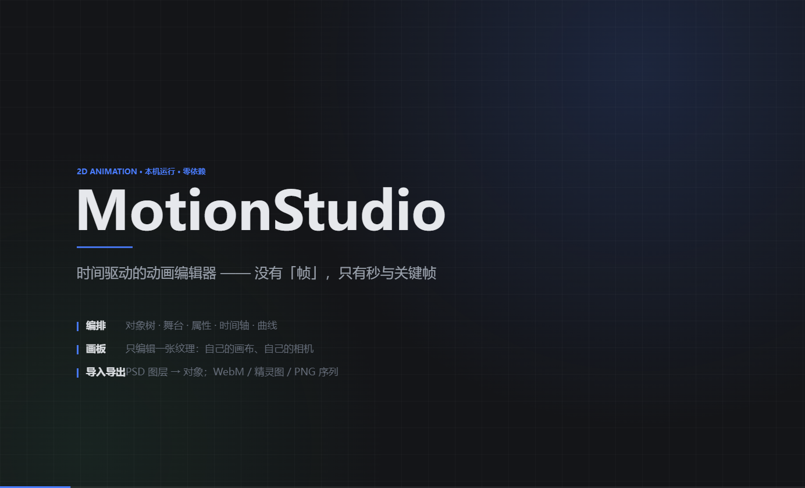

MotionStudio · 宣传片
27 秒，1384×840，VP9 WebM —— 时间驱动、画板独立、纹理挂在关键帧上。

分镜（共 8 段，27.4s）
- 0.0–3.4 标题：时间驱动，没有「帧」，只有秒与关键帧
- 3.4–7.0 编排：一个工作区只做一件事
- 7.0–10.6 纹理属于关键帧：key.drawing / 显式空白 / 沿用
- 10.6–14.2 画板只编辑一张纹理：自带画布与相机
- 14.2–17.8 笔刷：晕染 + 离散点
- 17.8–21.2 工具条一行：笔刷 / 色块 / 大小 / 透明 / 取色 / 镜像 / 撤销
- 21.2–24.2 进出：PSD 导入、WebM / 精灵图 / PNG 序列、项目存档
- 24.2–27.4 结尾：仓库地址
重新生成
宣传片是「代码画的」，不是录屏：app/promo/promo.js 导出确定性渲染 draw(g, t, w, h) 与两个录制入口。
- 预览：浏览器打开
app/promo/index.html（需由本机静态服务托管，路径/promo/index.html） - 录制：在应用页面里
const P = await import('./promo/promo.js'); await P.preload(); const r = await P.record({fps:30})， 再把r.bytes落到docs/promo/motionstudio-promo.webm - 注意：应用窗口必须可见（
document.hidden === false）。窗口被遮挡/最小化时 Chromium 会节流 rAF 与合帧， MediaRecorder 录出来是静止画面。另一种encodeWebM()用 WebCodecs 逐帧编码（与可见性无关）， 但自写的 WebM 封装没有 Cues，拖动进度条同样会回到开头。